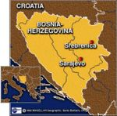

De: La Frikipedia, la enciclopedia extremadamente seria.
De: La Frikipedia, la enciclopedia extremadamente seria. De: La Frikipedia, la enciclopedia extremadamente seria.
| De la serie Países del planeta tierra: | |||||
| Босна и Херцеговина (Bosnia-Herzegovina) | |||||
|---|---|---|---|---|---|
| |||||
| Lema: No somos yugoslavos | |||||
| Himno: Orgullo Yugoslavo (Bosnian Edition)
| |||||
| 
| |||||
| Capital | Sarajevo | ||||
| Mayor ciudad | Mostar (Aqui tienen sus armas de destruccion masiva) | ||||
| Lenguas oficiales | Bosnio, Herzegovino, Croata, Serbio, Yugoslavo, Montenegrino. | ||||
| Gobierno | Doble (Uno controla Bosnia y otro controla Herzegovina) | ||||
| Presidente (Председник) | Edin Dzeko | ||||
| Área | Al menos tiene costa | ||||
| Población | 4 millones | ||||
| Moneda | La de la extinta Yugoslavia (Милано) | ||||
| Zona horaria | GTM +1 o 2 | ||||
| Dominio Internet | .byh | ||||
| Código telefónico | 1-800-BOSNIALOVESH
| ||||
| Bosnia y Herzegovina son buenos amigos | |||||
Pais situado en la peninsula de balcanes logro su desparacitacion de Yugoslavia junto con Eslovenia, Macedonia y Montenegro. Un pais joven con mucha voracidad, exportador de jugadores de futbol con nombres dificiles de pronunciar ademas que su gran dilema es: Por cuanto tiempo Bosnia seguira siendo amigo de Herzegovina, solo el tiempo lo dira.
Bosnia-Herzegovina son dos países en uno, pero con más tribus que en una película de indios. También llamado Bosnia a secas, porque se ve que Herzegovina es el sumiso. El país antes no era país, pero fue conocido por las guerras ya que formaba parte de Yugoslavia y acabaron fatal entre ellos, pero han hecho las paces y ahora en Eurovisión se cambia los votos con Croacia y Serbia, sus vecinitos. El país no es todavía de la Unión Europea, pero seguro que entrará. Es famoso por el pastel de tripas de cordero bosnio o la infaltable sopa de higado de tiburon herzegovino, infaltables en los dias festios del Ramadan (el 90 por ciento de la poblacion es musulmana).
Su nombre procede de dos de las tres regiones que componen el país: Bosnia (que en aspiñol significa Separado de papa) y Herzegovina (que en espiñol significa Separado de mama. La tercera región Srpska (pronúnciese prrrrrsksksska), ha sido históricamente ignorada y es utilizada por el resto del país para pruebas de bombardeo y cementerio nuclear, por lo tanto de sus rios emanan grandes fuentes de azufre y plomo, que le dan a sus fuerzas armadas para que muten y asi obtengan mas fuerzas.
La capital es Sarajevo, si es que la han reconstruido ya, donde hace un frío del carajo y está rodeada de montañas. Otra ciudad famosa es Mostar, porque tiene un puente, se ve que es el único de todo el país y por eso la ciudad es famosa. Tambien esta Tuzla, la que dicen fue el lugar de nacimiento de Nikola Tesla, claro que los serbios envidiosos tomaraon a Tesla como propio, otra de las razones por las cuales Bosnia-Herzegovina odia a sus ex-hermanos.
Bosnia-Herzegovina sigue siendo el menor de sus ex-hermanos, por lo que es el rechazado, su economia es la peor de toda la region de los Balcanes, por lo tanto han empezado un megaproyecto, exportar jugadores de futbol a toda Europa, este proyecto ya esta surtiendo efecto en las ligas mas importantes, como la Premier League que tiene a Edin Dzeko en el Manchester City haciendo travesuras con Aguero.
Ha sido una nacion con poca suerte en cuanto a la clasificacion del mundial o la eurocopa, siempre quedando segundos. Ahora desde que Kusturica (director bosnio que hizo un documental de Maradona) se hizo famoso, el gobierno bosnio a implementado un programa llamado BFF (Bosnian Football and Friends) que tiene como intencion darle un impulso a su futbol, esto ya ha dado frutos por ejemplo: Edin Dzeko, el demoledor bosnio que ama Herzegovina y que no le importa estar con el Kun Aguero.
Ahora sueñan con clasificar a la Eurocopa 2012 (su ultimo intento antes del fin del mundo) y tambien para el Mundial 2014 (su primer intento despues del fin del mundo), les deseamos suerte con sus jugadores con nombres y apellidos inpronunciables.
Se dice que cuando la luna sea tapada por un culo de negro gigante proveniente de Africa, los Balcanes se levantaran y rios de sangre fluiran hacia Bosnia-Herzegovina. Cuando sus habitantes encuentren la respuesta de la incognita: "Por que nuestra seleccion no puede clasificar al mundial", se desatara la furia de Europa del este y empezara la "re-conquista".
  Imperios de Europa Imperios de Europa
|
|---|
| Eslovaquia |
Autor(es):